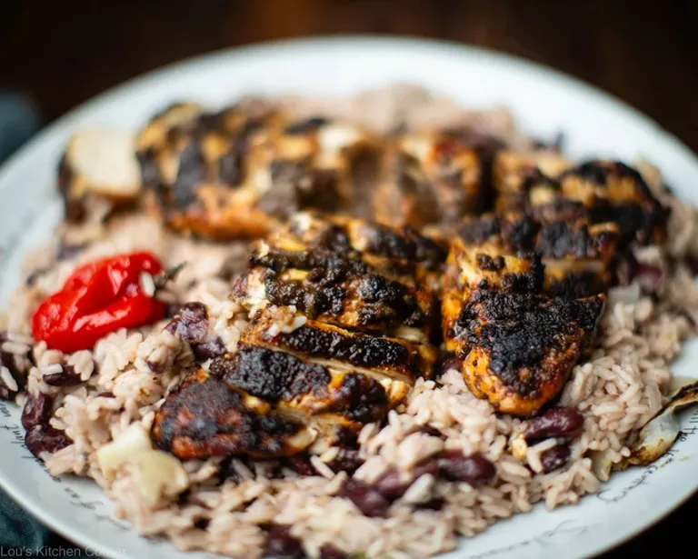

Jamaican Jerk Chicken

Before its rise as the poster child of Caribbean food, Jerk had a long history in Jamaica.
It is thought to have been brought over from South America, who cooked meats in sacred fire pits called 'barbicu'.
This method of cooking was suited to the needs of the Maroons, escaped slaves who had settled and established colonies in the island's mountains.
Following the abolition of slavery, the Jerk method of cooking migrated to the streets and beachs of Jamaica, and a legacy was born.
- 2 tbsp All-purpose seasoning
- 1 tsp salt
- 1 tsp freshly ground black pepper
- 1 tbsp dark soy souce or browning
- 1 tbsp minced garlic
- 1 tbsp minced fresh root ginger
- 2-3 tbsp Jerk seasoning
- 1 spring onion (scallion), chopped
- 1 sprig of thyme
- 2 tbsp BBQ sauce
- 4 skin-on, bone-in chicken leg quarters
- 1 lime, cut into wedges
- Mix the all-purpose seasoning, salt, pepper, soy sauce, garlic, gnger, jerk seasoning, spring onion and thyme with 1 tablespoon of the BBQ suace in a large flat-bottomed bowl.
- Add the chicken and turn it in the marinade until coated.
- Cover and leave to marinate in the fridge for at least 1 to 4 hours, or ideally overnight.
- Light your barbecue. When ready, add the meat and grill for 50 minutes to 1 hour with the lid closed. Every 10-15 minutes, open the lid and turn the meat, basting with the marinade.
- After 40 minutes, brush with the BBQ sauce for a sweeter jerk and contintue cooking for a final 10-20 minutes, until charred in places.
- Serve fresh with traditional rice and peas and fried plantain.